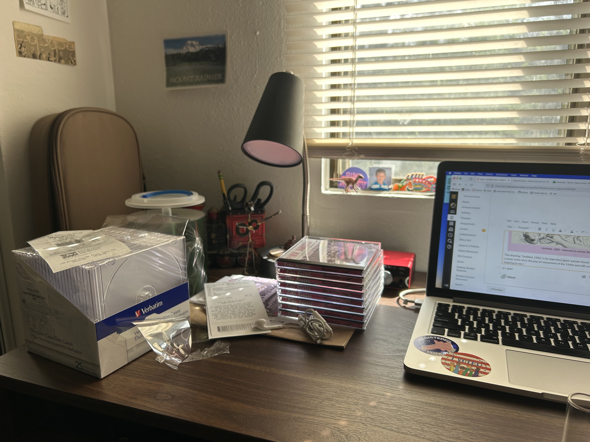
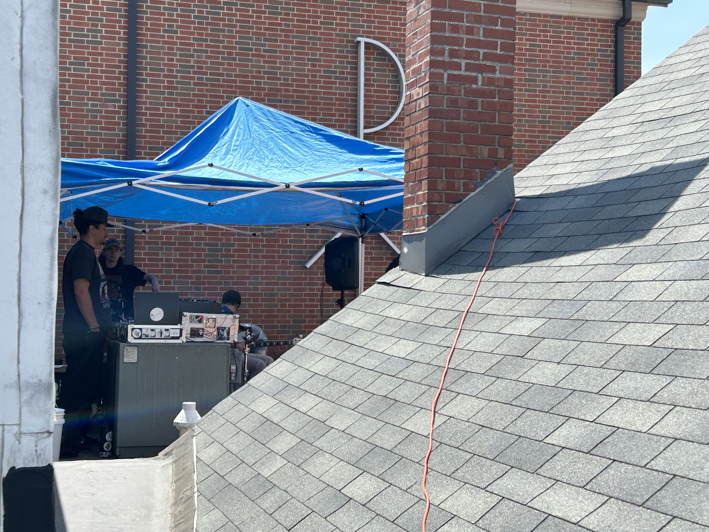
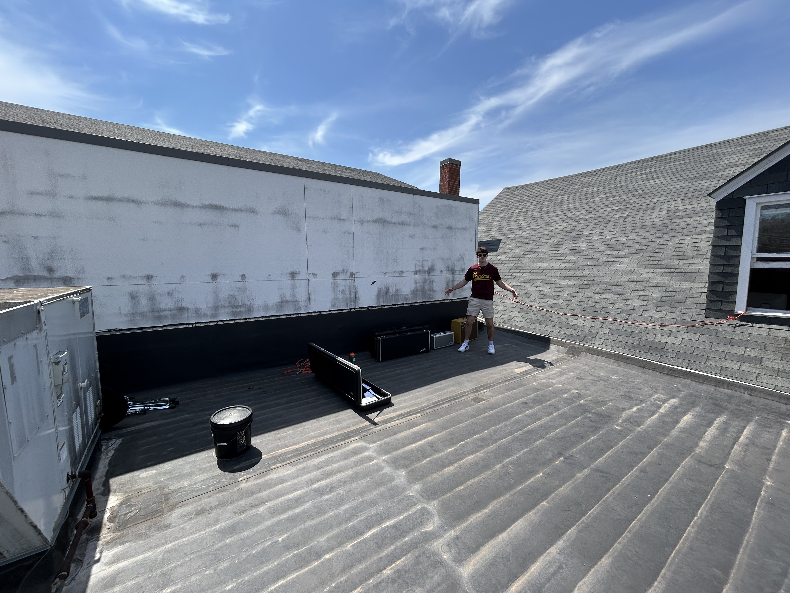
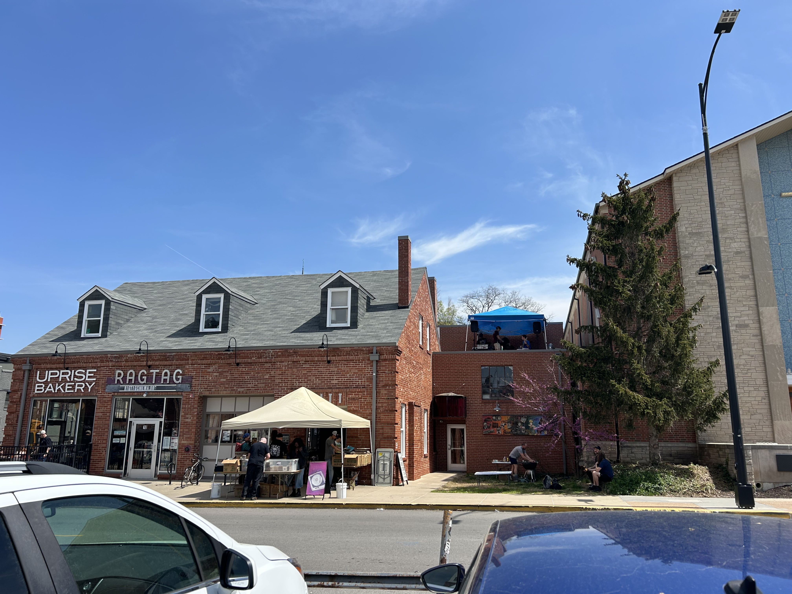
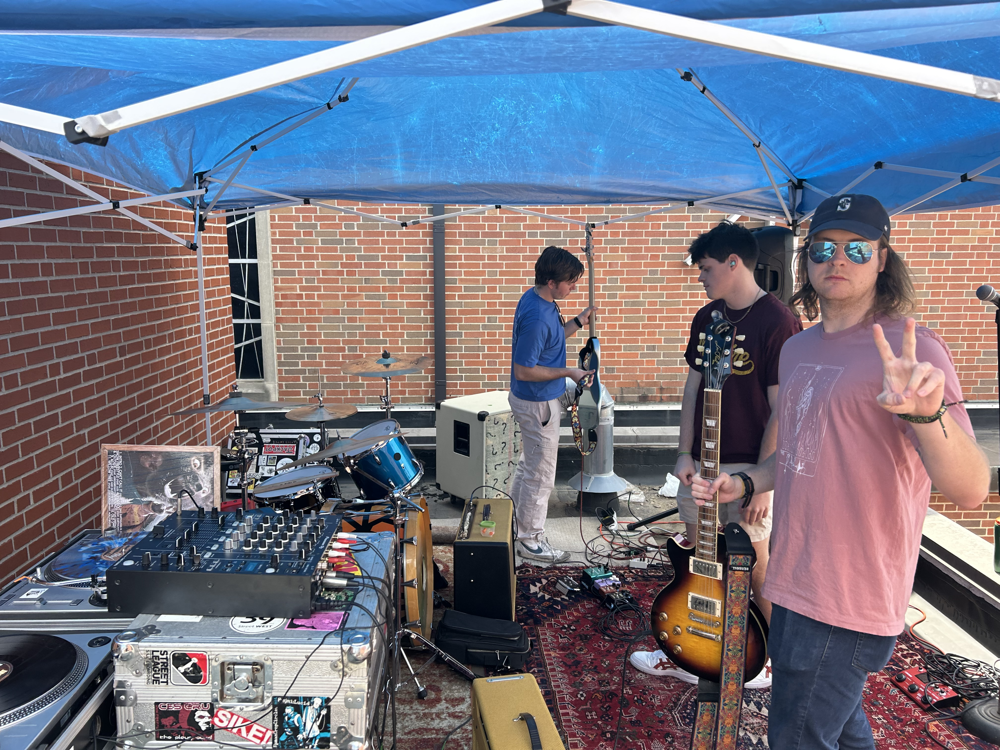
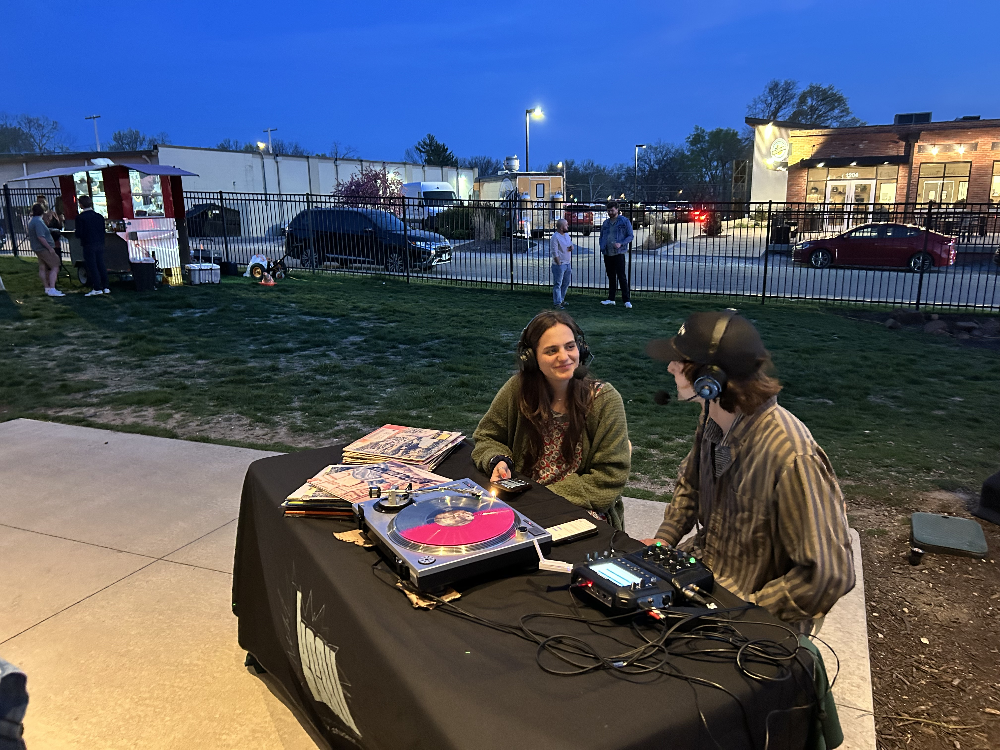
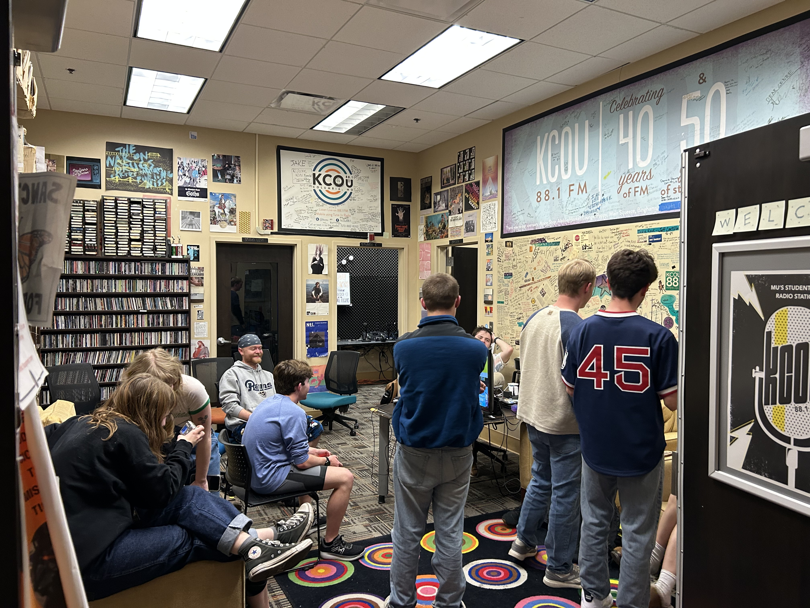

My Saturday on April 18th was a busy day! It was Record Store Day, which is a celebration of independent record stores. My band, Pink Houses, got invited to play on the roof of local record store Hitt Records.
The day was also Vinylthon, a 24 hour non-stop broadcast of exclusively vinyl records. The student ran radio station I'm in, KCOU, participated in this nationwide fundraiser for college stations. After my band's set, I DJed for two hours outside of the store, then went and hung out with other DJs the rest of the event.

My Saturday morning started with finishing homework and making CDs for my band's EP.

I met up with the band and we moved all of our gear to the roof of Hitt Records.

It was our first time on the roof!

The view from across the street.

Getting ready to play.Moved all of our equipment back to the house and ran back to do a DJ set for KCOU's Vinylthon broadcast live from Hitt Records.

Another live DJ set from Logboat Brewing Company.

Hanging out in the studio. Vinylthon was a 24 hour event.We had coffee and videogames to keep us going.Enjoying some nature on Sunday to rest up.